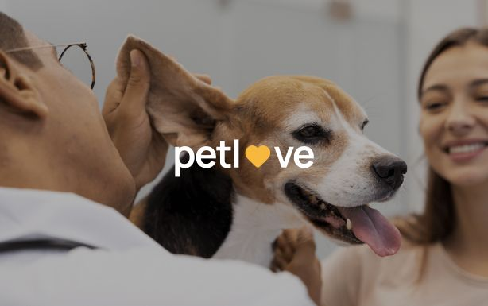

<section class="projects" id="projects">
  <div class="container">
    <h2 class="projects-title">Projects</h2>
    <div class="swiper mySwiper">
      <div class="swiper-wrapper">
        <!-- Repeat this block for the skin project -->
        <div class="swiper-slide project">
          <div class="project-content">
            <ul class="project-skills">
              <li class="project-skill">#react</li>
              <li class="project-skill">#js</li>
              <li class="project-skill">#node js</li>
              <li class="project-skill">#git</li>
            </ul>
            <h3 class="project-title">
              Programming Across Borders: Ideas, Technologies, Innovations
            </h3>
            <div class="projects-img-wrapper">
              <picture>
                <source
                  media="(min-width: 768px)"
                  srcset="
                    ../img/projects/project-1_desk@1x.jpg 1x,
                    ../img/projects/project-1_desk@2x.jpg 2x
                  "
                />

                <source
                  media="(max-width: 767px)"
                  srcset="
                    ../img/projects/project-1_mob@1x.jpg 1x,
                    ../img/projects/project-1_mob@2x.jpg 2x
                  "
                />
                
              </picture>
            </div>
            <div class="projects-img-wrapper">
              <picture>
                <source
                  media="(min-width: 768px)"
                  srcset="
                    ../img/projects/project-2_desk@1x.jpg 1x,
                    ../img/projects/project-2_desk@2x.jpg 2x
                  "
                />

                <source
                  media="(max-width: 767px)"
                  srcset="
                    ../img/projects/project-2_mob@1x.jpg 1x,
                    ../img/projects/project-2_mob@2x.jpg 2x
                  "
                />
                
              </picture>
            </div>
            <div class="projects-img-wrapper">
              <picture>
                <source
                  media="(min-width: 768px)"
                  srcset="
                    ../img/projects/project-3_desk@1x-1.jpg 1x,
                    ../img/projects/project-3_desk@2x-2.jpg 2x
                  "
                />

                <source
                  media="(max-width: 767px)"
                  srcset="
                    ../img/projects/project-3_mob@1x-1.jpg 1x,
                    ../img/projects/project-3_mob@2x-2.jpg 2x
                  "
                />
                
              </picture>
            </div>
          </div>
          <div class="project-button">
            <a class="project-link" href="https://github.com/IhorDid/return-js"
              >See project</a
            >
          </div>
        </div>
        <!-- End of project block -->
      </div>
      <!-- Additional code for swipe navigation -->
      <div class="swiper-button-next">
        <button class="project-next-btn" type="button">
          <svg
            class="projects-arrow-right-icon"
            width="24"
            height="24"
            aria-label="arrow right"
          >
            <use href="../img/sprite.svg#icon-arrow-right"></use>
          </svg>
        </button>
      </div>
      <div class="swiper-button-prev">
        <button class="project-next-btn" type="button">
          <svg
            class="projects-arrow-left-icon"
            width="24"
            height="24"
            aria-label="arrow left"
          >
            <use href="../img/sprite.svg#icon-arrow-left"></use>
          </svg>
        </button>
      </div>
      <div class="swiper-pagination"></div>
    </div>
  </div>
</section>
